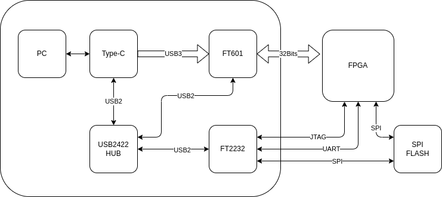
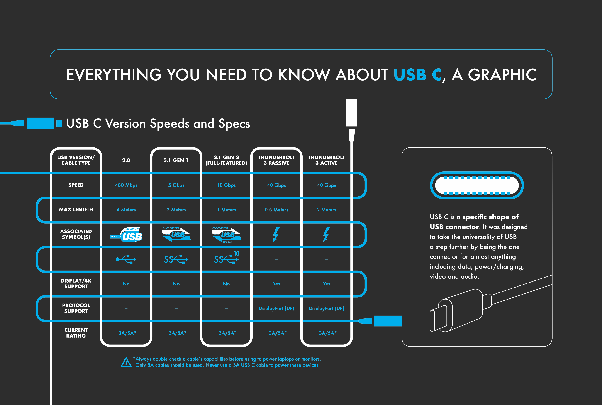

2025-02
2025-02-14
Micropython pyBoard DAC use DMA
import math
from array import array
from pyb import DAC
# create a buffer containing a sine-wave, using half-word samples
buf = array('H', 2048 + int(2047 * math.sin(2 * math.pi * i / 128)) for i in range(128))
# output the sine-wave at 400Hz
dac = DAC(1, bits=12)
dac.write_timed(buf, 400 * len(buf), mode=DAC.CIRCULAR)
Any-Maze
 any-maze
any-mazeFPGA and USB3

FT602 for UVC
FT602是SuperSpeed USB（USB 3.1 Gen 1）到FIFO接口的USB视频类（UVC）桥接芯片，支持来自高分辨率摄像机设备的视频内容流。可以获得显着提高的视频质量，并且以60帧速率运行。
通过标准的支持UVC的硬件和常用的媒体播放器平台（如VLC Player）查看捕获的图像数据时，可以使改进的性能受益匪浅。这样可以确保更大的便利性 - 以最少的投资来升级现有的系统，或从零开始设计和部署新的系统。 不需要定制驱动程序，从而允许简单的即插即用实现。
FT602系列补充了FTDI芯片现有的 FT60x 系列 结合FT600和FT601 芯片，为开发工程师提供业界最全面的USB 3.0产品组合。 这些设备能够提供USB 3.0 超高速(5Gbps)和USB 2.0高速（480Mbps）接口。 它们各自包含用于数据流的32位并行FIFO接口和用于控制路径配置的UART接口。 采用76引脚QFN封装，工作温度范围为-40°C至85°C。
Embedded scripting language and engine for Rust
Rhai:Embedded scripting language and engine for Rust
Generates Makefiles for FPGA EDA
Generates Makefiles for FPGA EDA
2025-02-13
How to Evaluate FPGA
| Property | Value |
|---|---|
| CLB | |
| BRAM | |
| DDR | |
| PCIE | |
| IO Speed | |
| SDRAM | |
| Flash | |
| Voltage |
2025-02-12
Git for Hardware Projects
How to draw schematics
Here are the rules I use when creating the block diagram
Start with big functional blocks
Link blocks with lines or arrows (arrows should represent data or power conversion flow)
Add labels to connecting lines for protocol names/voltage domains
Break down the big functional blocks into smaller blocks representing smaller circuits (a voltage regulator, load-switch, CAN transceiver, etc.)
Add labels with maximum expected power for each block
Here’s a set of rules I use when designing schematics
Use the default grid and never deviate from it. This will make aligning symbols easier and avoid weird shapes on connecting wires.
Positive power symbols always point up, ground always points down
Never join two components by placing the attachment points on top of each other — always use a connection wire to join the components (if by chance something is off-grid, this will allow you to catch it)
Ensure labels connected to an IC are aligned vertically
Label text should be placed on top of a wire (avoid hanging labels)
Try to align power symbols horizontally
If you create or import symbols, make sure the symbol style is consistent with the rest library
Avoid crossing wires in weird places
Make sure every circuit is displayed in the way it is usually displayed in text-book examples (unless that hurts readability):
Voltage dividers: resistors should be vertically aligned
Transistors should be designed emitter facing down
Ensure proper spacing between components in a way that text labels are readable and don’t overlap with neighboring components
Where possible, ensure your components and circuit blocks are aligned
Keep your wires at least 2 grid spacing long — keep this rule from pin to pin and from pin to wire crossings (break this rule only if this hurts readability)
Avoid 4-wire junctions as these can easily lead to errors and don’t improve readability
Be consistent — make sure you always write things the same way. Are all your labels upper-case? How do you write capacitor values? 100nF, 100N, 0.1u? — choose a style and stick to it.
Chrome App Mode
chromeでアプリモード
chromeでつぎのようにすると単独のアプリモードで起動できる。
$ /opt/google/chrome/chrome -app=http://keep.google.com/
$ chrome -app=http://hoge.com/
これはこれで良いのかも…
System D 2025
2025-02-11
System C 2025
Efinix FPGA with HyperRAM and SPI Flash
| FPGA | HyperRAM | CLB | Board |
|---|---|---|---|
| Ti60F100 | 256Mb | 62016 | Titanium Ti60 F225 Development Kit |


GoWin FPGA with SDRAM or Flash
| FPGA | SDRAM | CLB | Board |
|---|---|---|---|
| GW5AR | 64Mb | 23040 | |
| GW1NR | 64Mb~128Mb | 8,640 | Tang Nano 9K/4K |
| GW2AR | 64Mb~128Mb | 20736 | Tang Nano 20K |
2025-02-10
 Liberux Linux Phone
Liberux Linux PhoneNNStreammer
 NNStreammer
NNStreammer2025-02-08
UScope Linux Debugger

UScope: A New Linux Debugger And Not A GDB Shell, Apparently
2025-02-07
FPGA SDCard and XDMA
Wireless Headstage
2025-02-06
Syntalos


YOWASP and Amaranth

Unofficial WebAssembly-based packages for Yosys, nextpnr, and more
OpenMV 2025-02-06
Brain in the Loop
"cerebral organoids,” small artificial brain tissues, created using iPS cells
Low bit LLM on Edge
Why Animal Sleep
2025-02-05
OpenMV 2025-02-05
- The RT1062 ARM Cortex M7 processor running at 600 MHz with 32MBs SDRAM + 1MB of SRAM and 16 MB of program/storage flash. All I/O pins output 3.3V and are 3.3V tolerant. The processor has the following I/O interfaces:
- A high speed USB-C (480Mbs) interface to your computer. Your OpenMV Cam will appear as a Virtual COM Port and a USB Flash Drive when plugged in. 1.5A current limited. With EMI Filtering and TVS protection.
- A μSD Card socket capable of 25MB/s reads/writes which allows your OpenMV Cam to take pictures and easily pull machine vision assets off of the μSD card. With EMI Filtering and TVS protection.
- A SPI bus that can run up to 60Mb/s allowing you to easily stream image data off the system to either the LCD Shield or another microcontroller.
Google Rust Course
Google Comprehensive Rust Course
TSMC Revenu

2025-02-04
System B 2025
Reasons not to refactor
The Philosophy of Architecture
The Philosophy of Architecture - Barry O'Reilly - NDC Oslo 2024


Type-C

PICO PIO 02-04
A Practical Look at PIO on the Raspberry Pi Pico URL
Introduction to the PIO (Programmable Input Output) of the RP2040
Chip Alliance

Chisel HDL
F4FPGA
John Maynard Keynes
Masters Of Money | Part 1 | John Maynard Keynes
2025-02-03
PICO PIO 02-03
programmable-io-programming @ circuitcellar URL
Xilinx 7 Series Family Compare
7-series-product-selection-guide PDF
Sipeed FPGA Console use Gowin